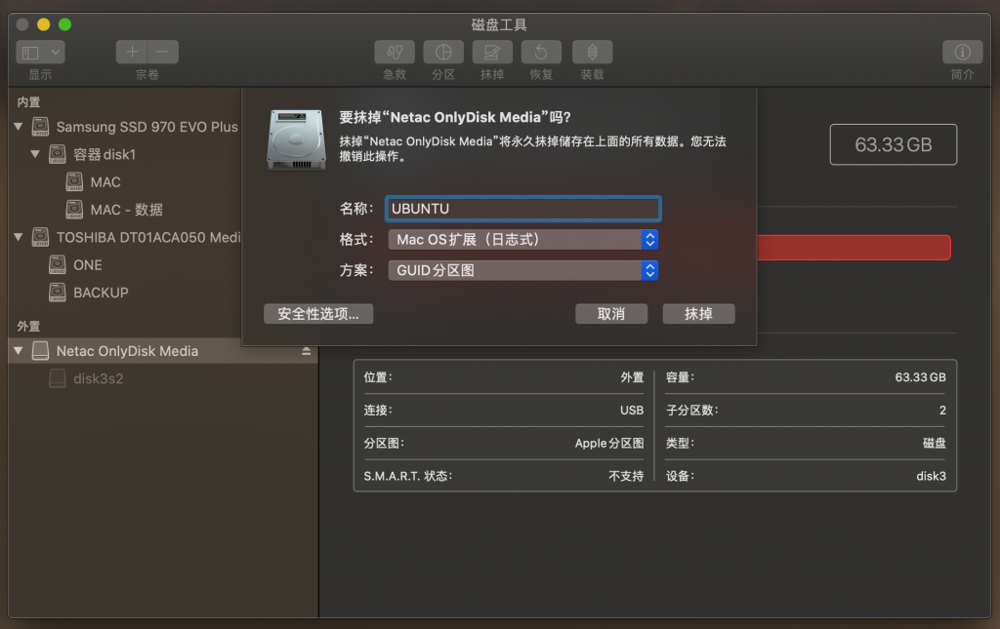
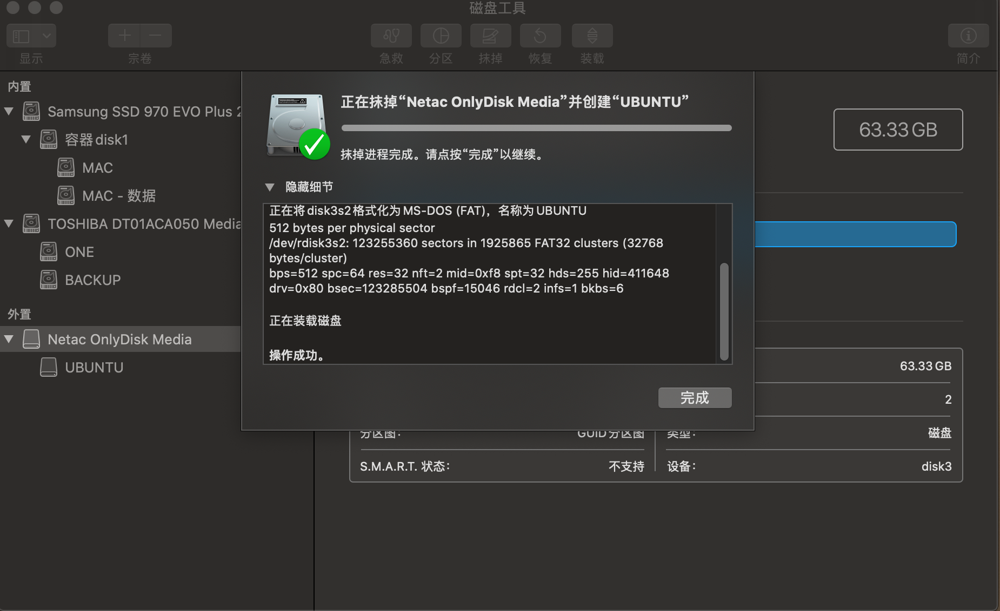
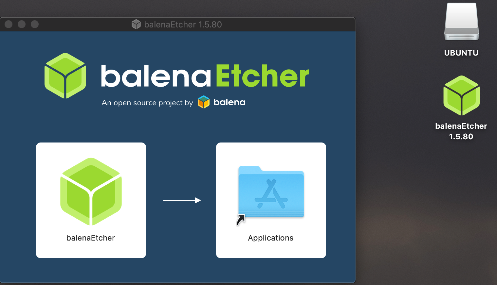
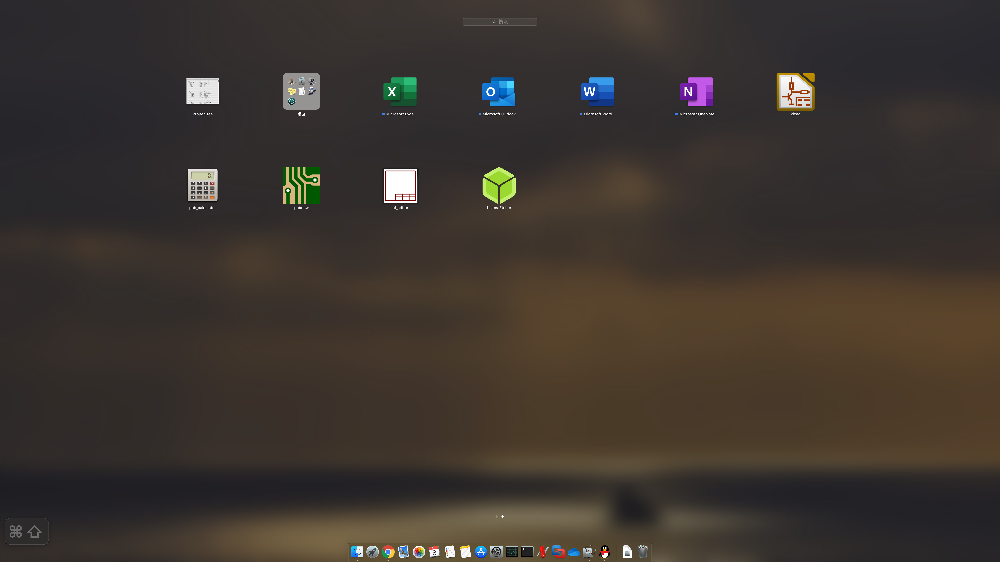
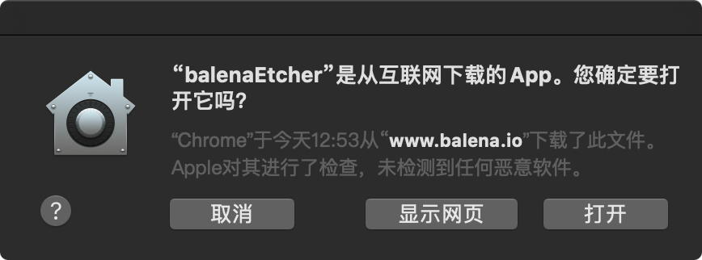
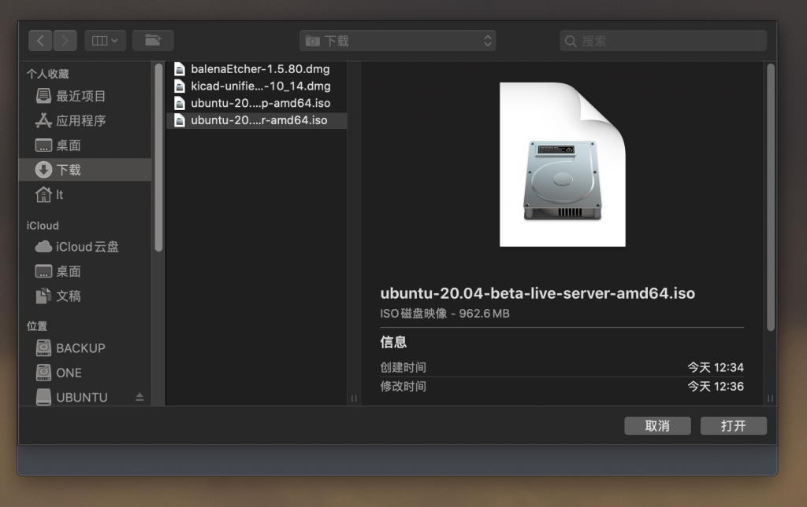
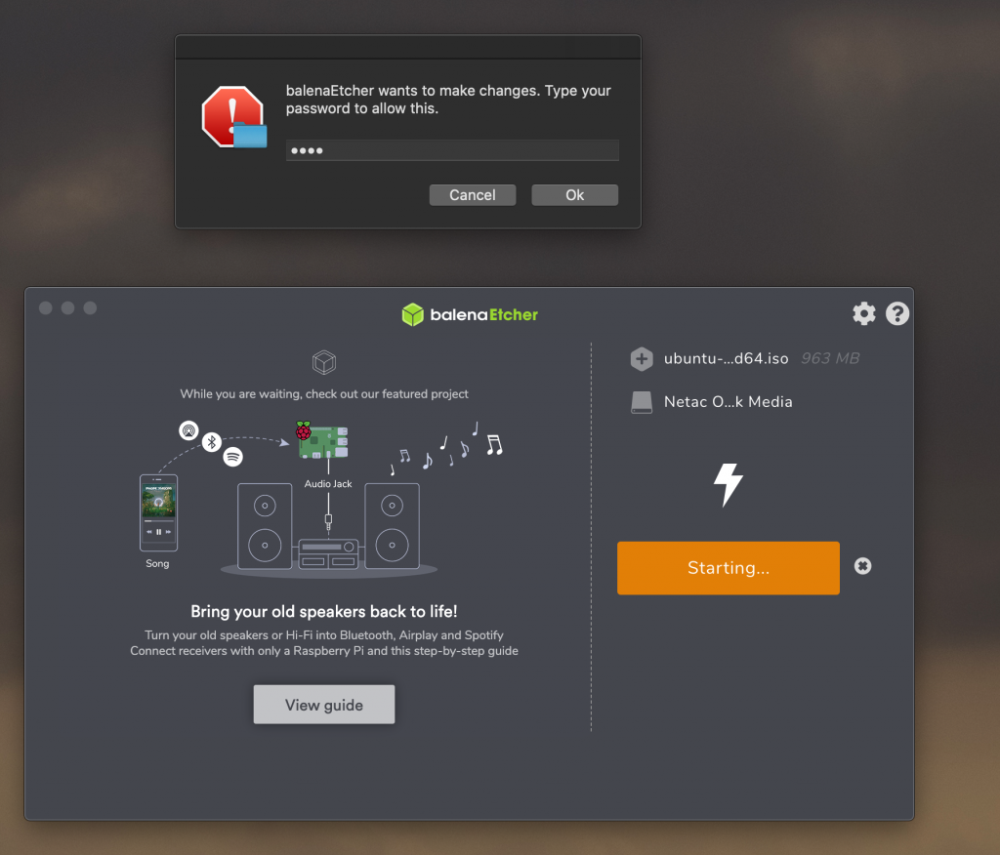
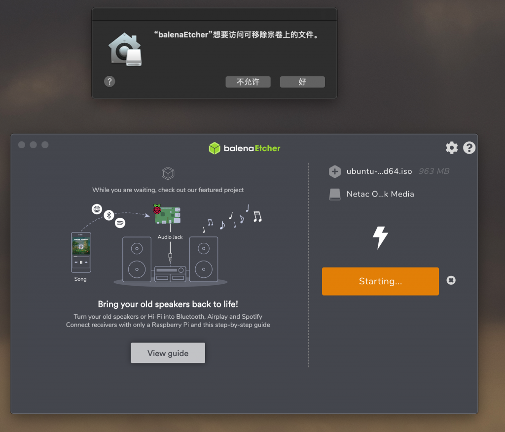
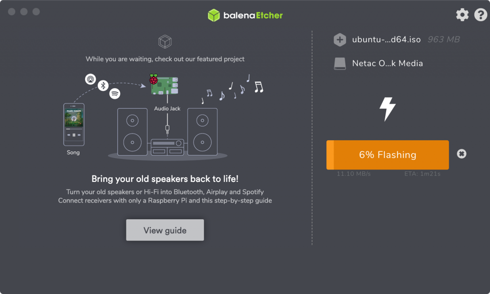
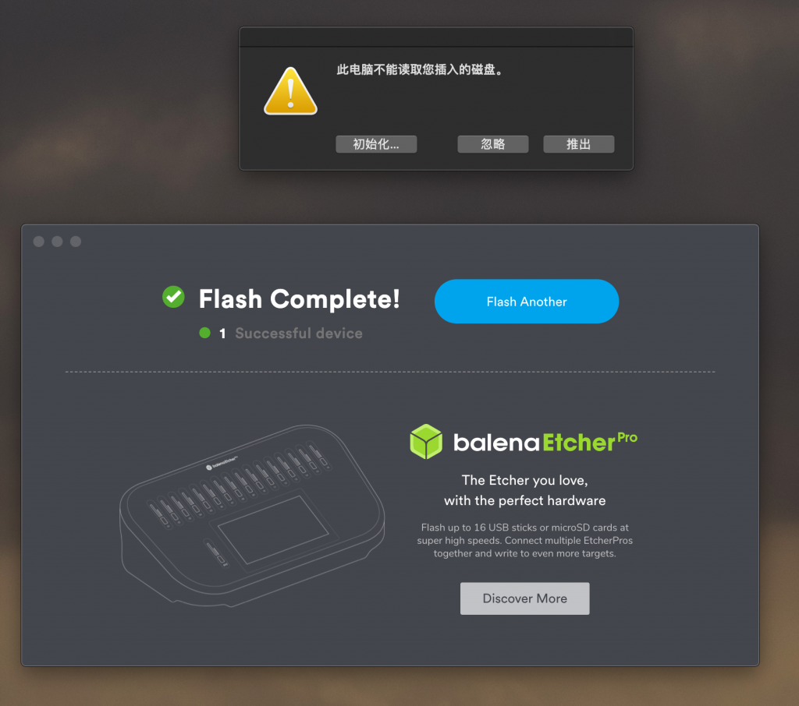

Create a bootable USB stick for Ubuntu on macOS
Create a bootable USB stick for Ubuntu on macOS 在mac电脑上制作ubuntu启动u盘。mac版本为10.15.4 (19E266)，ubuntu为20.04 beta。文章内容为：制作过程，安装过程，问题处理。
第一部分：制作u盘（create a usb stick）
在启动台找到磁盘工具->选择USB驱动器->抹掉，取个名字，格式为Mac os扩展日志式或ms-dos，方案：guid分区图。

完成关掉。

这里需要一个软件ehcher，官网推荐的开源并免费的软件。下载后将etcher拖入到applications文件夹。

拖入后在启动台可见。

第三方应用会提示安全问题，点击打开。

选择.ISO文件。

选择USB设备后点击flash，输入Mac密码。


开始刷写文件。

完成后，点击推出磁盘。

第二部分：安装系统（install Ubuntu server）
Ubuntu dosktop：https://tl8517.com/install-ubuntu-20-04/ （虚拟机安装）
Ubuntu server：https://tl8517.com/install-server-20-04/
参考文档：https://ubuntu.com/tutorials/tutorial-create-a-usb-stick-on-macos#1-overview